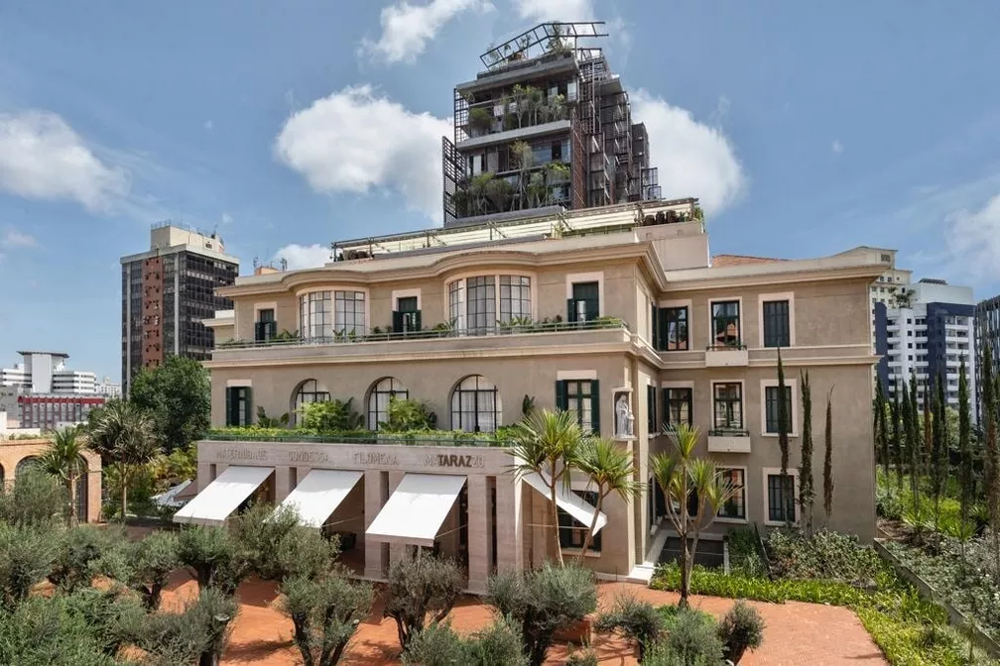

Empreendimento de R$ 2,7 bilhões do francês Alexandre Allard será finalizado em 2024, com 11 prédios que abrigarão shopping, galeria de arte, empório de comidas orgânicas e parque.
O mercado de luxo em São Paulo ganhou um representante de alto nível com a inauguração parcial da Cidade Matarazzo, um empreendimento imobiliário de "ultraluxo" com investimento previsto de R$ 2,7 bilhões, em uma área de 27 mil metros quadrados no Centro de São Paulo, que reúne um hotel, restaurantes de alta gastronomia e um bar.
